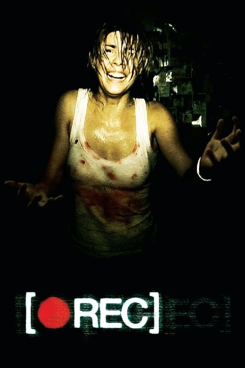

[REC] (2007)
Sinopsis Rápida
Una reportera y un bombero quedan atrapados en un edificio de apartamentos en cuarentena, donde un virus mortal se propaga a una velocidad aterradora. Su cámara registra el descenso a la locura y el horror.
Sinopsis Detallada
[REC] utiliza la innovadora técnica de metraje encontrado para sumergir al espectador en el terror visceral de una epidemia zombie. Angela Vidal y su cámara registran el caos y la desesperación a medida que el virus se extiende, creando una atmósfera claustrofóbica y tensa. La película se destaca por su realismo brutal, sus efectos especiales prácticos y su atmósfera opresiva que mantiene al espectador al borde del asiento. La película juega con las convenciones del género de terror, subvirtiendo las expectativas y ofreciendo un final impactante.
¿Por qué tenés que verla?
- Experimenta el terror visceral y claustrofóbico a través de la perspectiva inmersiva del metraje encontrado.
- La innovadora dirección de Jaume Balagueró y Paco Plaza crea una atmósfera tensa y realista que pocos films han logrado igualar.
- Su impacto en el género del terror fue inmediato, revitalizando el subgénero zombie y popularizando la técnica del found footage.
- La película ofrece un final impredecible y memorable, dejando al espectador con una sensación de inquietud y horror.
Idea Extra
Análisis comparativo de [REC] con otras películas de found footage, explorando sus similitudes y diferencias en cuanto a técnica, narrativa y temática.